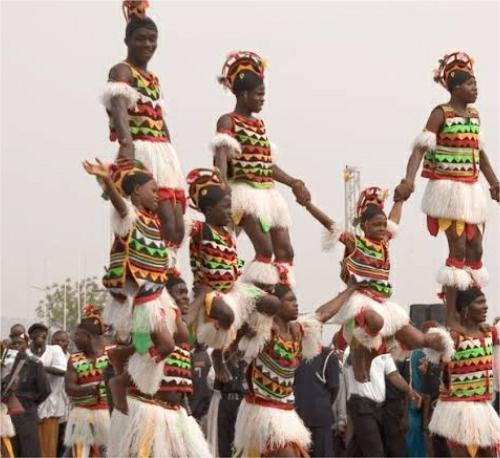
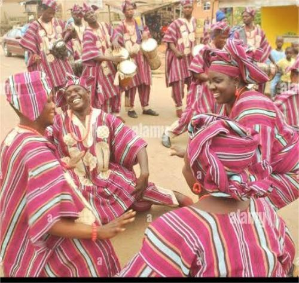
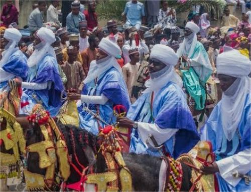

Experience Nigeria's Diversity
Explore Nigeria's ethnic groups, languages, festivals, and unique cuisine.

Calabar Culture
The people of Calabar, mainly of the Efik tribe, are known for their hospitality, colorful traditions, and world-famous Calabar Carnival...

Igbo Culture
The Igbo people are known for their rich traditions including the New Yam Festival, traditional music and dance, and colorful attires like the isiagu...

Yoruba Culture
The Yoruba people celebrate festivals like Eyo and Osun-Osogbo, wear agbada and iro-buba, and have deep-rooted storytelling, drumming, and religion...

Hausa Culture
The Hausa are known for their Durbar festivals, traditional regalia, music, and strong Islamic influence. Their cuisine includes dishes like tuwo and miyan kuka...